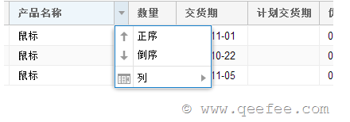

xtype：列类型
--例如：文本列、数字列、日期列、选择框列、操作列等
text：列头显示的文字
dataIndex：绑定的字段名
width：宽度
flex：自动适应的宽度
sortable：是否可排序，默认为是
hideable：是否可隐藏，默认为是
locked：锁定列，将列锁定在grid的开头，当grid出现滚动条的时候该属性比较有用。默认为否
lockable：是否可锁定，默认为否
format：格式化字符串，常用于日期、数字的格式化。
--日期：'Y-m-d'；
--日期时间：'Y-m-d H:i:s'；
--数字：'0,000.00'（带有千位分隔符、保留两位小数）、'0.00'（保留两位小数），'0'（不保留小数）
renderer：自定义绘制方法，可以是Ext.util.Format中定义好的方法名称，也可以是自定义否function，
该方法接收下面的参数：value、metadata、record、rowIndex、colIndex、store、view，并需要一个用来显示的返回值。
editor：编辑器，当使用编辑插件的时候才会起作用。
除了界面操作来选中行，我们还可以通过代码来选中行：
//选择行，并保持其他行的选择状态
grid.getSelectionModel().select(records, true);
//选择所有
grid.getSelectionModel().selectAll();
//根据row index选择
grid.getSelectionModel().selectRange(startRow, endRow, true)
默认情况下Extjs GridPanel是不显示行号的，我们需要手动添加行号列。
{ xtype: "rownumberer", text: "序号", width:40 }
Extjs GridPanel的异步加载数据是通过Store来实现的。我们之前已经介绍过Extjs Store的各种代理方式，
可以参考我之前的文章：
1.Extjs 客户端代理（proxy）
2.Extjs 服务器代理（proxy）
异步加载通常采用ajax代理.
服务器端返回的数据格式如下：
{
"rows": [
{
"name": "Tom",
"age": 12,
"phone": "1233455"
},
{
"name": "Jerry",
"age": 12,
"phone": "1233455"
},
{
"name": "Sinbo",
"age": 12,
"phone": "1233455"
},
{
"name": "Jack",
"age": 12,
"phone": "1233455"
},
{
"name": "Johnson ",
"age": 12,
"phone": "1233455"
}
],
"total": 5
}
当GridPanel中数据量大的时候，我们就需要使用分页了。
分页的实现由两部来完成:
1.首先是在Store中添加pageSize配置项，用来确定每页显示多少行数据；
2.然后需要为GridPanel添加PagingToolbar。
Extjs GridPanel可以方便的实现列编辑。要实现这个功能需要两步：
在默认情况下，Extjs GridPanel不允许进行选中单元格中的内容，由于不能选中，我们就不可能来复制单元格中的内容。如果要实现这种功能，我们需要通过viewConfig来实现。
代码如下：
viewConfig:{
stripeRows:true,//在表格中显示斑马线
enableTextSelection:true //可以复制单元格文字
}
Extjs GridPanel的列，当我们点击列头的时候，会出现一个菜单：

如果我们要禁用这个菜单，可以将每个column定义属性menuDisabled指定为true，代码如下：
{header: '列标题', dataIndex: '数据对应字段名', width:150,menuDisabled:true}